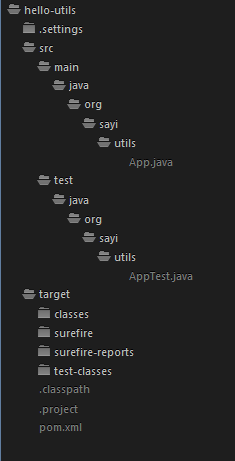
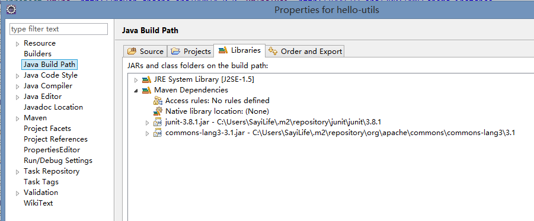

Apache Maven
Maven，在Yiddish语言中，意味着 知识的积累 ，最早是用来在Jakarta Turbine项目中试图去简化构建过程，在这个项目中有若干个工程，每个工程都包含着稍微不同的ant构建文件，并且版本库中存放着的很多jars包，因此我们需要一种标准的方式去构建项目，一个对项目结构的清晰定义，一种简便的发布项目信息的方式和一种在若干项目中分享jars包的途径。
Maven的主要目标是让开发人员在最短的时间内理解开发工作的完整状态，为了实现这个目标，有几点需要去解决：
- 使构建过程更容易
- 提供统一的构建系统
Maven允许项目使用项目对象模型POM和一系列所有项目共享的插件，提供统一构建的系统。一旦你熟悉一个Maven项目如何建立，你就知道所有的Maven项目的构建，这会在浏览许多项目时节省很多时间。 - 提供优质的项目信息
- 提供最佳实践的指导
Maven的目的是收集当前的最佳实践发展的原则，并可以很容易地在那个方向引导项目。 - 允许透明的迁移到新特性
Maven 安装
独立的Maven安装文件
Maven提供了命令行，我们可以通过命令行进行操作，在maven官网上可以下载maven的安装文件，解压缩后，设置系统的Path,然后敲下 mvn -v,输出版本信息如下：
C:\Users\Sayi>mvn -v
Apache Maven 3.1.1 (0728685237757ffbf44136acec0402957f723d9a; 2013-09-17 23:22:22+0800)
Maven home: D:\Sayi\apache-maven-3.1.1\bin\..
Java version: 1.7.0_25, vendor: Oracle Corporation
Java home: C:\Java\jdk1.7.0_25\jre
Default locale: zh_CN, platform encoding: GBK
OS name: "windows 8", version: "6.2", arch: "amd64", family: "windows"
Eclipse的Maven插件 ---- m2e
下载m2e插件，在eclipse的preference--Maven中可以更改Maven的配置，通常都内嵌了某个版本的Maven。 在插件的首选项配置中，可以勾选上Download Artiface Sources来同时下载源码。在首选项Maven--Templates下可以看到一些插件书写的模版。
Maven 用户配置--setting.xml
用户配置有全局配置和用户配置两个文件，全局配置在maven解压缩后的conf/setting.xml下，而用户配置都在系统用户目录下的.m2/setting.xml。如下列出一些基本配置项：
localRepository 配置本地仓库路径
<localRepository>F:/Sayi/MavenRepo/m2/</localRepository>
mirror 下载镜像配置,如使用国内OSchina的镜像服务:
<mirrors>
<!-- mirror | Specifies a repository mirror site to use instead of a given
repository. The repository that | this mirror serves has an ID that matches
the mirrorOf element of this mirror. IDs are used | for inheritance and direct
lookup purposes, and must be unique across the set of mirrors. | -->
<mirror>
<id>nexus-osc</id>
<mirrorOf>*</mirrorOf>
<name>Nexus osc</name>
<url>http://maven.oschina.net/content/groups/public/</url>
</mirror>
</mirrors>
profiles 根据环境参数激活的配置文件列表
<profile>
<id>jdk-1.7</id>
<activation>
<jdk>1.7</jdk>
</activation>
<repositories>
<repository>
<id>nexus</id>
<name>local private nexus</name>
<url>http://maven.oschina.net/content/groups/public/</url>
<releases>
<enabled>true</enabled>
</releases>
<snapshots>
<enabled>false</enabled>
</snapshots>
</repository>
</repositories>
<pluginRepositories>
<pluginRepository>
<id>nexus</id>
<name>local private nexus</name>
<url>http://maven.oschina.net/content/groups/public/</url>
<releases>
<enabled>true</enabled>
</releases>
<snapshots>
<enabled>false</enabled>
</snapshots>
</pluginRepository>
</pluginRepositories>
</profile>
Maven 项目配置--pom.xml
Maven 插件
Maven的核心是一个可执行的插件框架，所有的任务都是通过插件完成的。主要分为两类插件：
1 构建插件
2 报告插件
核心插件
- clean
- compiler
- deploy
- failsafe
- install
- resources
- site
包工具插件
- ear
- jar
- rar
- war
报告插件
- changelog
- changes
- chekstyle
- doap
- javadoc
- jxr
- pmd
工具
- ant
- antrun
- archetype
- dependency
- help
- patch
- release
还有很多第三方插件，比如mojo项目中的包 org/codehaus/mojo下的插件，还有google code下。比如
sql
apache tomcat
* jetty
自己开发一个Maven插件示例
插件命名
插件名称应该是形如 <yourplugin>-maven-plugin ，比如
用来做什么
仅仅创建一个目录，如果目录已存在，则什么都不做，尽管这可以使用antrun插件来完成。
Maven项目示例
在这个项目中，我们将开发一个工具类，提供方法截取字符串，为了体现依赖的配置，使用common-lang3.jar中的类进行处理，最后生成这个工具类的jar包。
建立Maven工程
典型的Maven工程目录约定如下：
sayi-maven
`-- src
|-- main
| `-- java
| `-- org
| `-- sayi
| `-- utils
| `-- App.java
| `-- resources
`-- test
`-- java
`-- org
`-- sayi
`-- utils
`-- AppTest.java
`-- resources
`-- target
|-- pom.xml
完整的标准目录结构解释如下，其中src包括了构建项目所有的资源，target目录则是所有构建的输出：
src/main/java Application/Library sources
src/main/resources Application/Library resources
src/main/filters Resource filter files
src/main/assembly Assembly descriptors
src/main/config Configuration files
src/main/scripts Application/Library scripts
src/main/webapp Web application sources
src/test/java Test sources
src/test/resources Test resources
src/test/filters Test resource filter files
src/site Site
pom.xml
LICENSE.txt Project's license
NOTICE.txt Notices and attributions required by libraries that the project depends on
README.txt Project's readme
使用命令行 mvn archetype:generate可以基于一些原型创建工程，这些原型提供了默认的目录结构，maven提供了一些标准的原型，如maven-archetype-quickstart、maven-archetype-webapp、maven-archetype-plugin
mvn archetype:generate \
-DarchetypeGroupId=org.apache.maven.archetypes \
-DgroupId=org.sayi.utils \
-DartifactId=sayi-maven
也可以使用 mvn archetype:create创建项目：
mvn archetype:create -DgroupId=hellosayi -DartifactId=simple -DpackageName=org.sayi.utils
-DarchetypeArtifactId=maven-archetype-webapp -DinteractiveMode=false
在Eclipse中通过新建Maven Project来创建项目，比如选择了quickstart原型后，产生的目录如下：

配置pom.xml
此项目中依赖于第三方jar包，我们配置依赖关系如下，其中的依赖jar包的配置可以通过搜索maven仓库或者官网的doc进行配置：
<dependencies>
<dependency>
<groupId>junit</groupId>
<artifactId>junit</artifactId>
<version>3.8.1</version>
<scope>test</scope>
</dependency>
<dependency>
<groupId>org.apache.commons</groupId>
<artifactId>commons-lang3</artifactId>
<version>3.1</version>
</dependency>
</dependencies>
</project>
配置完成后，jar包会下载到本地仓库中，在eclipse工程的build path中，可以看到已依赖此架包

codeing编写代码
package org.sayi.utils;
import org.apache.commons.lang3.StringUtils;
public abstract class App
{
public static String trim(String str){
return StringUtils.trim(str);
}
}
清理、测试、编译
本示例不包括测试代码，但是测试代码的执行命令是 mvn test,清理target下构建的输出使用命令 mvn clean,编译使用命令 mvn compile
打包成jar
由于项目pom中设置了 <packaging>jar</packaging>，所以直接运行命令：
mvn package
将会在Target根目录下生成jar包，如果需要安装到本地的仓库中，可以直接使用命令：
mvn install